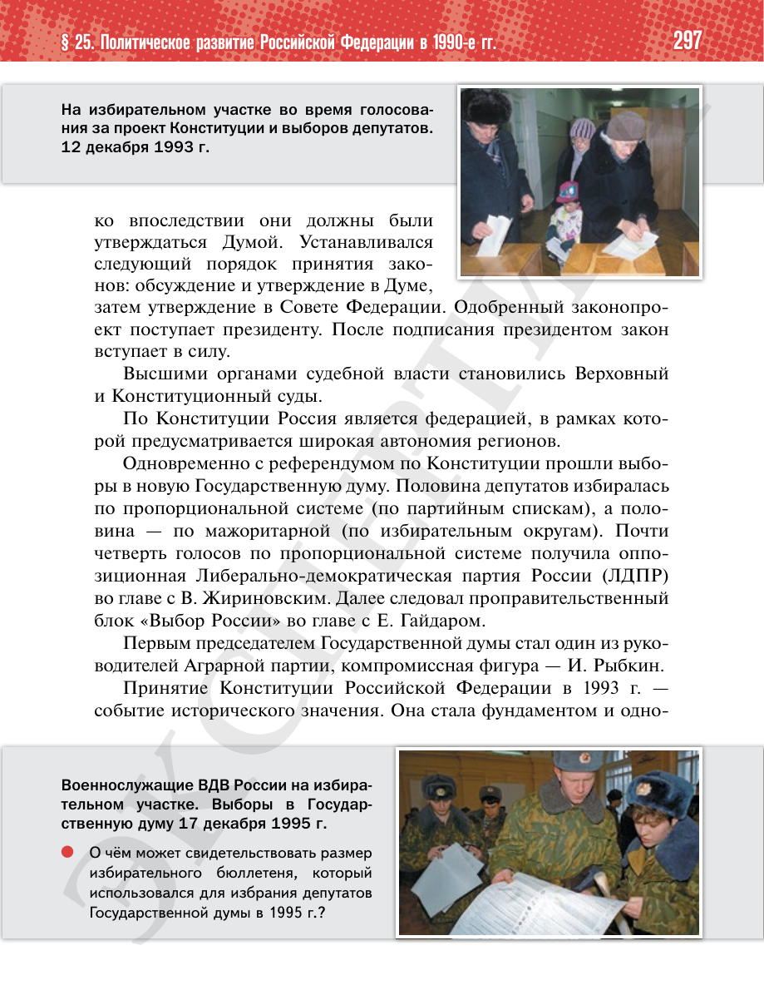

⌂
Мединский.нет
Последнее обновление: 27.08.2026
Мединский.нет
›
История России. 11 класс. Базовый уровень
›
Глава II. Российская Федерация в 1992 — начале 2020-х гг.
›
§ 25. Политическое развитие Российской Федерации в 1990-е гг.
›
стр. 297

← стр. 296
Оглавление
стр. 298 →
×